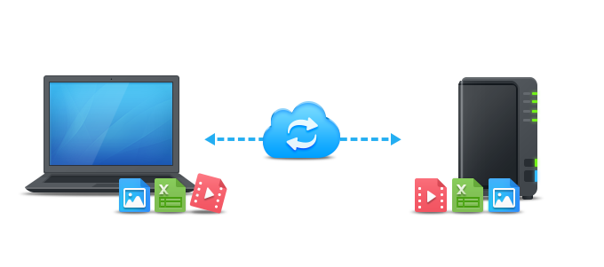
Visão Geral
A Cloud Station não é apenas uma plataforma sofisticada de software de sincronização de dados. Os utilizadores também a podem usar como meio inteligente para a cópia de segurança dos seus computadores pessoais. Existem algumas vantagens na utilização da Cloud Station como sua associada para a realização de cópia de segurança. Em primeiro lugar, a duplicação em tempo real proporciona rum melhor RPO, um período de tempo mais curto no qual os dados podem ser perdidos (irrecuperavelmente) do seu PC devido a um incidente importante. Não só é instantâneo, como também o ajuda a poupar a largura de banda, de forma significativa, comparativamente a uma cópia de segurança tradicional que, num determinado momento, utiliza valores elevados de largura de banda. Pode filtrar facilmente os ficheiros na mesma pasta dos quais não pretende cópia de segurança, definindo o tamanho do ficheiro ou o tipo de ficheiro no seu cliente PC. A Cloud Station também pode conservar até 32 versões do histórico de um único ficheiro que a Cloud Station lhe permite restaurar para um cliente PC do lado do servidor (NAS).
1. Configurar a Cloud Station no Synology NAS
- Inicie sessão no DSM utilizando uma conta pertencente ao grupo administrator.
- Inicie a Cloud Station.
- Se não tiver ativado a funcionalidade home do utilizador, vai ser solicitado que o faça. Clique em OK.
- Será redirecionado para a página de definições do utilizador. Ative a home do utilizador e clique em Aplicar.
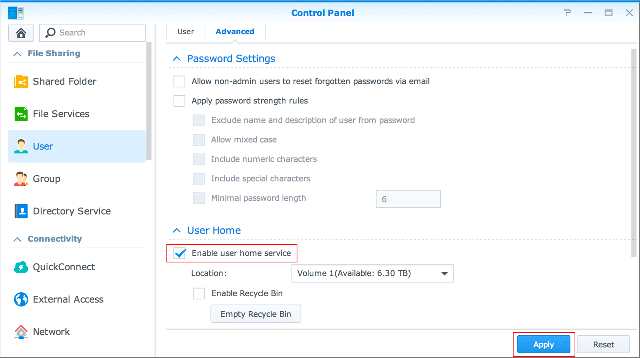
- De seguida, volte à Cloud Station, onde será solicitada a respetiva ativação. Clique em Sim.
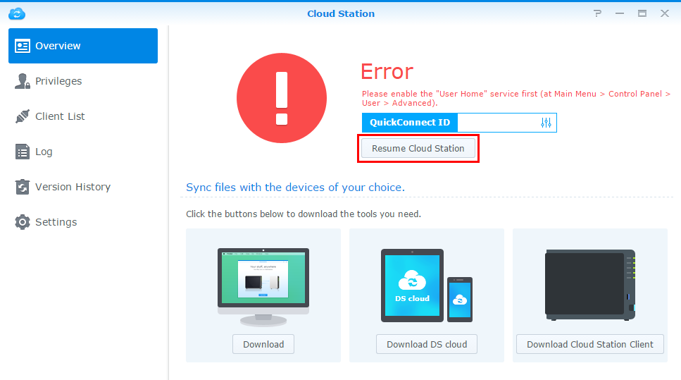
Nota: O QuickConnect é um serviço de retransmissão que lhe permite ligar facilmente ao seu Synology NAS do exterior da sua rede local. Se pretender sincronizar os seus ficheiros quando está ausente da residência ou do escritório, recomendamos que configure o QuickConnect, acedendo a Painel de Controlo > QuickConnect.
- Aceda a Privilégios e especifique quais os utilizadores que poderão utilizar a Cloud Station. Clique em Guardar.
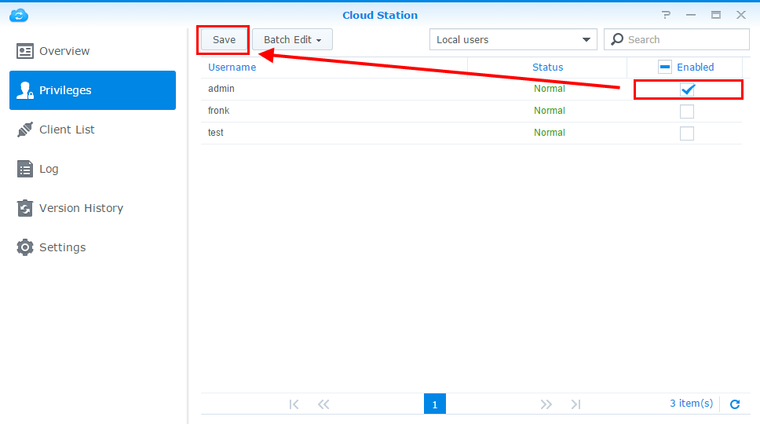
- Configure uma pasta partilhada no seu Synology NAS para efeitos de cópia de segurança. Para isso, aceda a Painel de Controlo > Pasta Partilhada e clique em Criar.
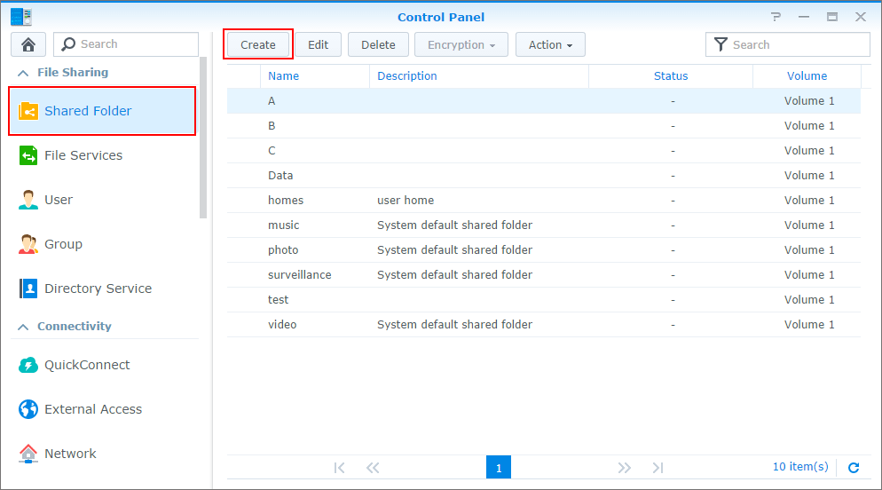
- Atribua um nome à sua pasta e preencha os detalhes em conformidade. Clique em OK. Por exemplo, vamos atribuir à pasta o nome de Cópia de Segurança.
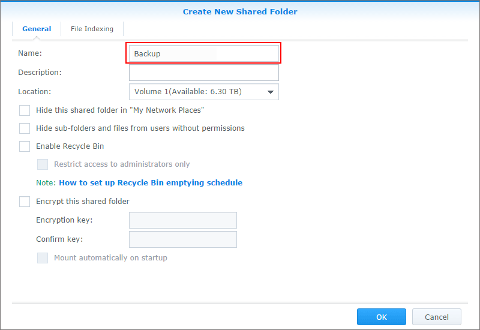
- No separador de Permissões, especifique quais os utilizadores que poderão aceder à pasta. Por exemplo, vamos atribuir a admin as permissões de leitura/escrita parta a pasta. Clique em OK.
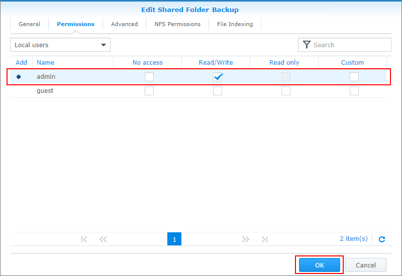
- Aceda a Cloud Station > Definições > Partilha e seleccione a pasta Cópia de segurança e clique em Activar.
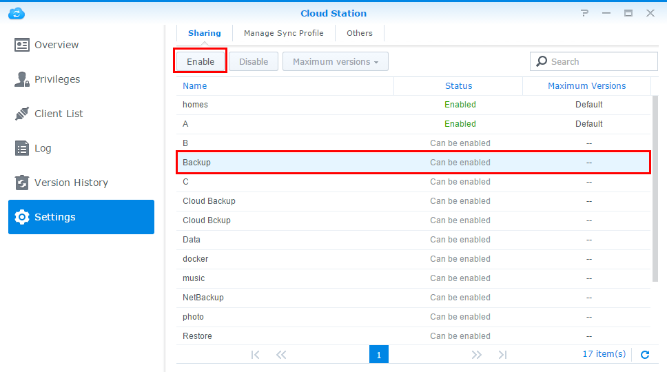
2. Configurar a Cloud Station no seu Windows PC
Siga os passos para configurar a Cloud Station no seu Mac ou PC
2,1 Para PC
- Aceda a Cloud Station > Visão Geral e clique no botão Transferir.
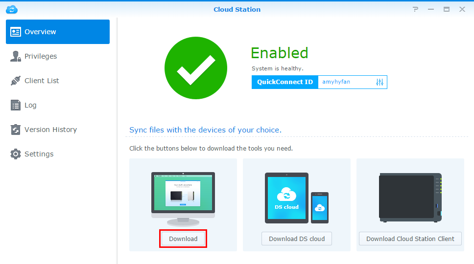
- Clique no botão para transferir a Cloud Station para o Windows PC. (Também pode transferir a Cloud Station a partir do Centro de Transferências da Synology.)
- Inicie o instalador no seu computador e siga as instruções para instalar a Cloud Station.
- Depois da instalação, execute a Cloud Station no seu computador. Clique em Começar Agora.
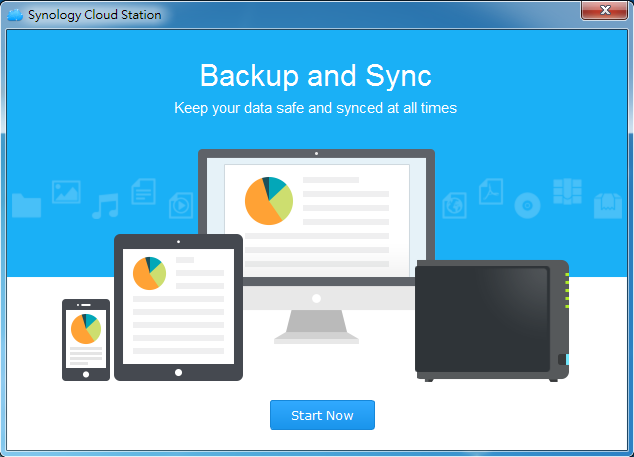
- Introduza o endereço do Synology NAS que executa a Cloud Station (ou QuickConnect ID), nome de utilizador e palavra-passe. (Pode também clicar no ícone de pesquisa à direita, e a Cloud Station irá pesquisar automaticamente outro Synology NAS dentro da sua LAN). Clique em Seguinte.
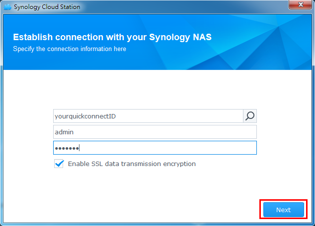
Nota: Certifique-se de que a conta introduzida dispõe das permissões concedidas em Cloud Station > Privilégios no Synology NAS.
- Seleccione como deseja configurar a sua tarefa (aqui, seleccionaremos Configuração Avançada, uma vez que estamos a configurar uma pasta especificamente para cópia de segurança). Clique em Seguinte.
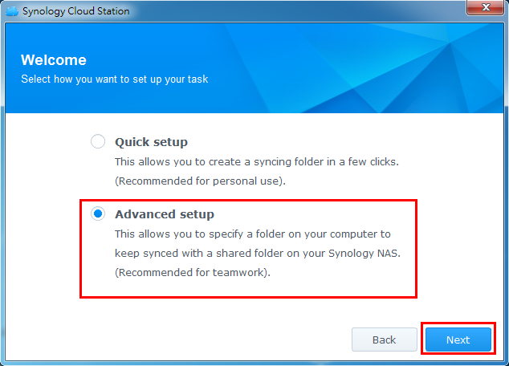
- Selecione uma pasta no seu computador para manter sincronizada com a pasta Cópia de Segurança que criou anteriormente no seu Synology NAS. Clique em Seguinte.
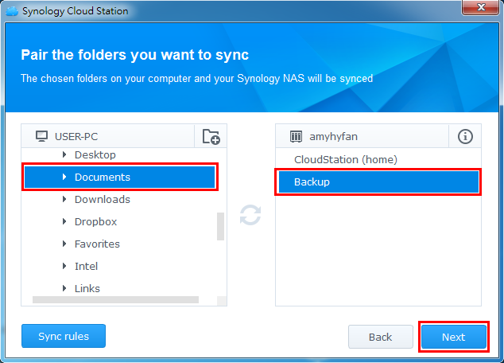
- Clique em Concluído para concluir a configuração.
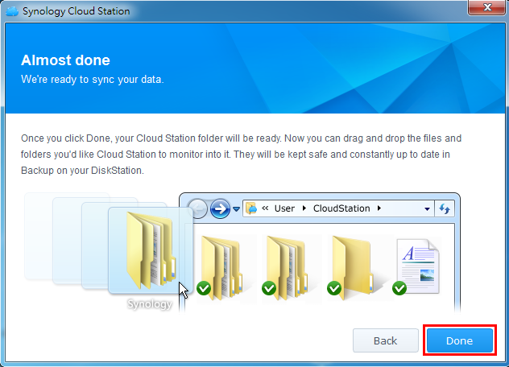
Para criar outra tarefa:
- Aceda a Cloud Station > Definições e ative uma pasta partilhada para esta nova tarefa. O meu exemplo é photo. Certifique-se que tem privilégios de leitura/escrita para photo.
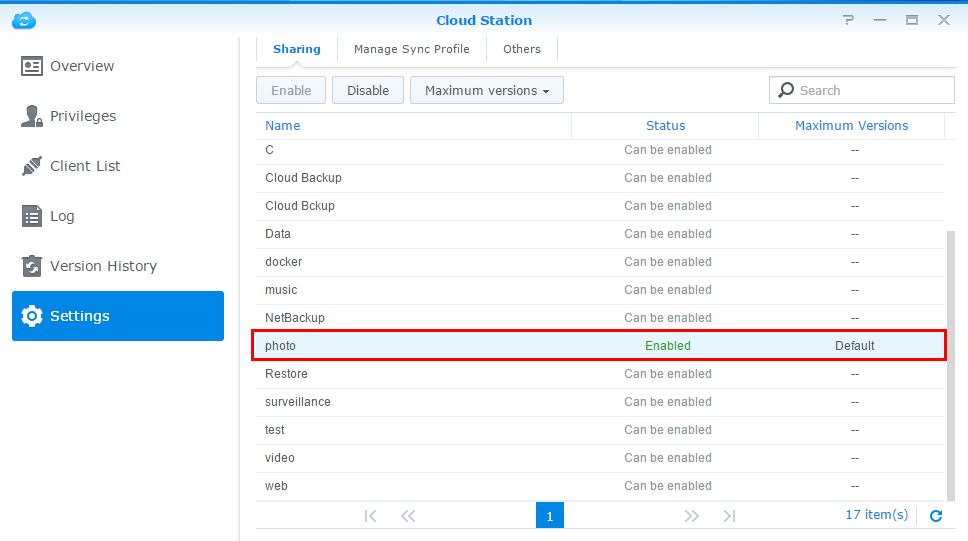
- De regresso à Cloud Station no seu PC, clique em Criar.
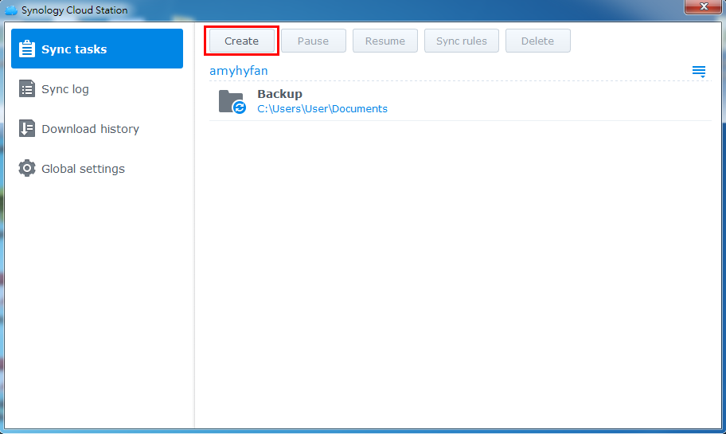
- Seleccione um Synology NAS para a sua nova tarefa. Aqui iremos seleccionar Synology NAS ligado uma vez que estamos a criar outra tarefa para o mesmo Synology NAS. Clique em Seguinte.
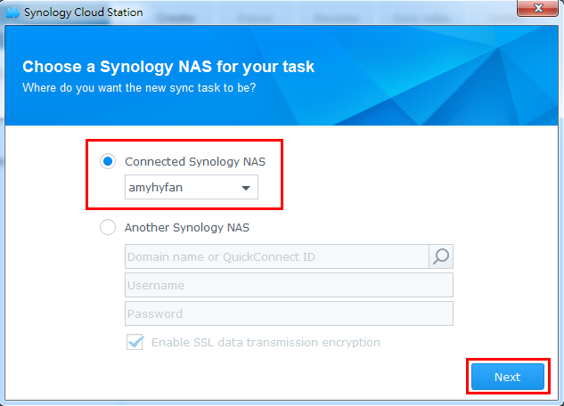
- Seleccione Configuração avançada e siga o resto do assistente para continuar a configuração.
2.2 Para Mac
- Aceda a Cloud Station > Visão Geral e clique no botão Transferir.
- Clique no botão para transferir a Cloud Station para o Mac. (Também pode transferir a Cloud Station a partir do Centro de Transferências da Synology.)
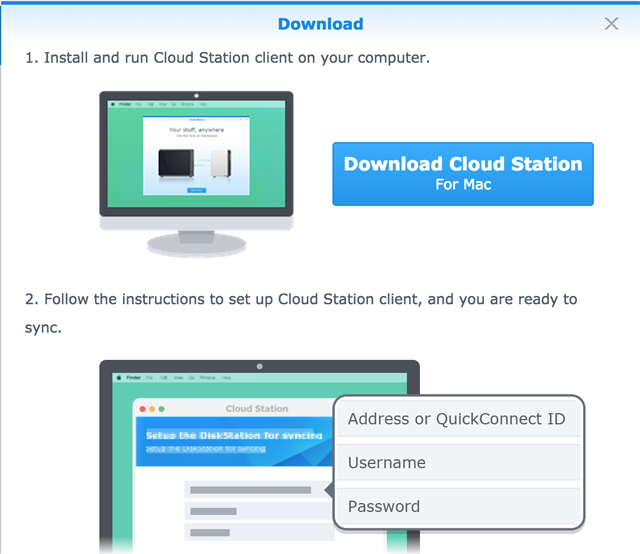
- Inicie o instalador no seu computador e siga as instruções para instalar a Cloud Station.
- Depois da instalação, execute a Cloud Station no seu computador. Clique em Começar Agora.
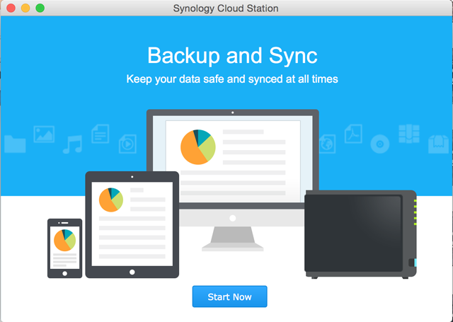
- Introduza o endereço do Synology NAS que executa a Cloud Station (ou QuickConnect ID), nome de utilizador e palavra-passe. (Pode também clicar no ícone de pesquisa à direita, e a Cloud Station irá pesquisar automaticamente outro Synology NAS dentro da sua LAN). Clique em Seguinte.
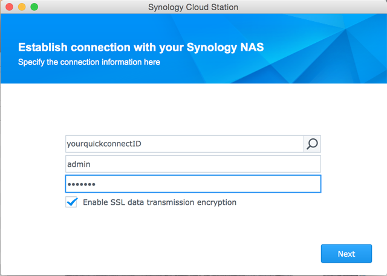
Nota: Certifique-se de que a conta introduzida dispõe das permissões concedidas em Cloud Station > Privilégios no Synology NAS.
- Seleccione como deseja configurar a sua tarefa (aqui, seleccionaremos Configuração Avançada, uma vez que estamos a configurar uma pasta especificamente para cópia de segurança). Clique em Seguinte.
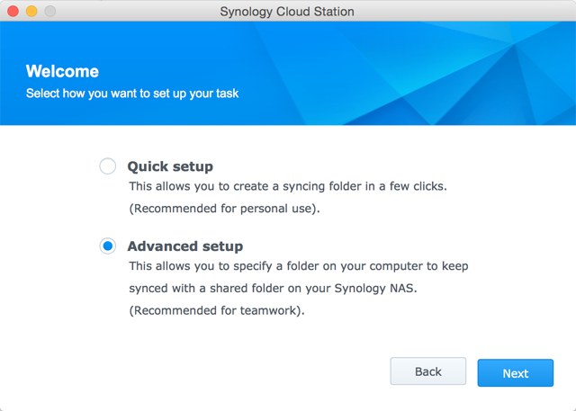
- Selecione uma pasta no seu computador para manter sincronizada com a pasta Cópia de Segurança que criou anteriormente no seu Synology NAS. Clique em Seguinte.
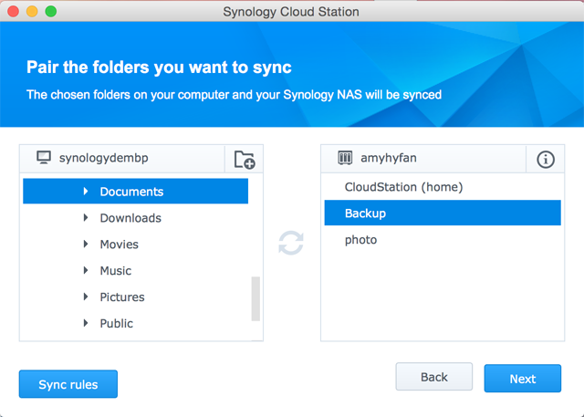
- Clique em Concluído para concluir a configuração.
Para criar uma nova tarefa:
- Aceda a Cloud Station > Definições e ative uma pasta partilhada para esta nova tarefa. O meu exemplo é photo. Certifique-se que tem privilégios de leitura/escrita para photo.
- De regresso à Cloud Station no seu computador, clique em Criar.
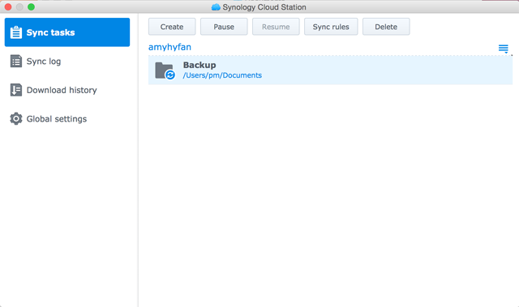
- Seleccione um Synology NAS para a sua nova tarefa. Aqui iremos seleccionar Synology NAS ligado uma vez que estamos a criar outra tarefa para o mesmo Synology NAS. Clique em Seguinte.
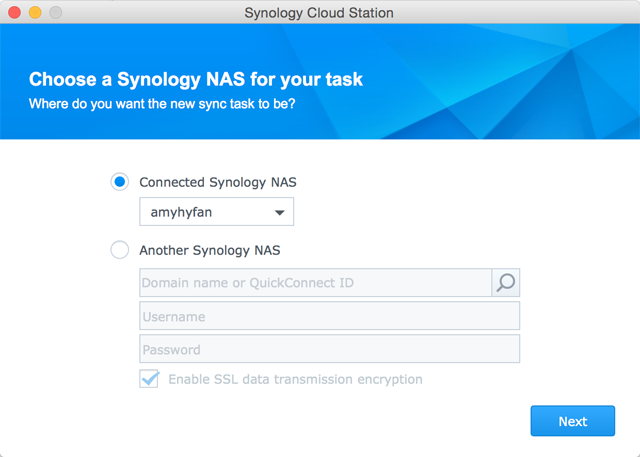
- Seleccione Configuração avançada e siga o resto do assistente para continuar a configuração.
3. Recuperar dados da Cloud Station
Se remover ou sobrepor acidentalmente um ficheiro, a Cloud Station permite-lhe recuperá-lo facilmente.
4.1 Para transferir uma versão anterior de um ficheiro sincronizado em PC
- Clique no ícone da Cloud Station no seu tabuleiro de sistema e clique no ícone da pasta.
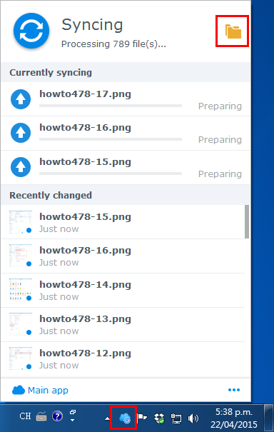
- Clique com o botão direito do rato no ficheiro selecionado e escolha Synology Cloud Station > Pesquisar versões anteriores.
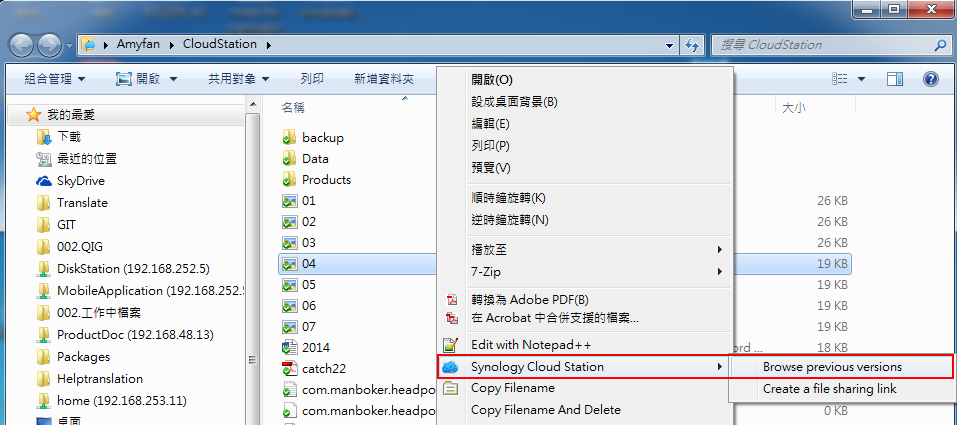
- Localize a versão que pretende transferir e clique no ícone de transferência.
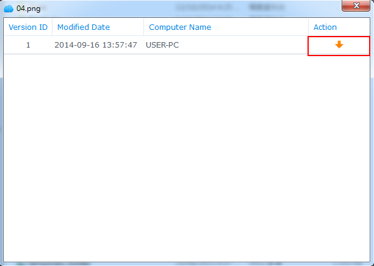
- Introduza o nome do ficheiro e escolha o destino para guardá-lo.
4.1 Para transferir uma versão anterior de um ficheiro sincronizado em Mac
- Clique no ícone da Cloud Station no seu tabuleiro de sistema e clique no ícone da pasta.
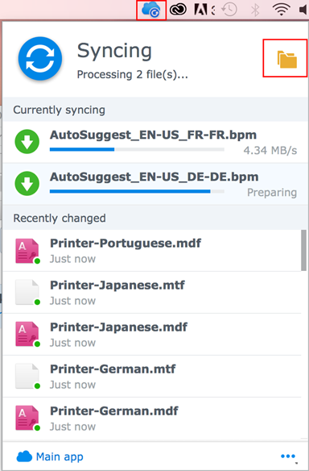
- Clique com o botão direito do rato no ficheiro selecionado e escolha Synology Cloud Station > Pesquisar versões anteriores.
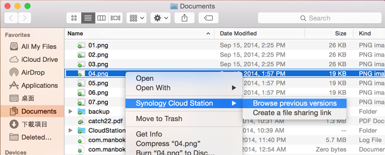
- Localize a versão que pretende transferir e clique no ícone de transferência.
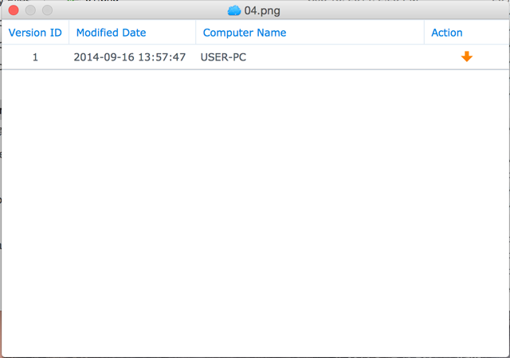
- Introduza o nome do ficheiro e escolha o destino para guardá-lo.
4.3 Para transferir ou restaurar uma versão anterior de um ficheiro sincronizado na Cloud Station
- Aceda a Cloud Station > Histórico Versões e selecione a pasta Cópia de Segurança que criou anteriormente.
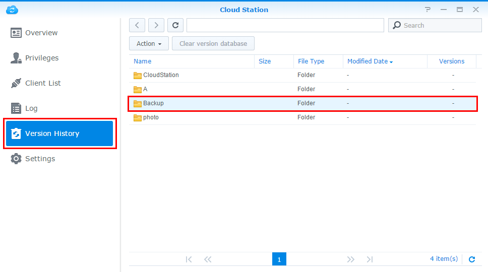
- Selecione o ficheiro que pretende recuperar e clique em Ação > Percorrer versões anteriores.
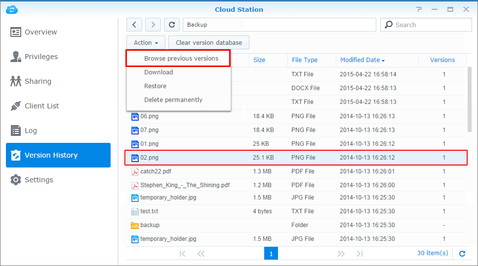
- Selecione a versão do ficheiro que pretende transferir e clique em Transferir. Ou, se tiver a certeza de que pretende a versão a selecionada restaurada, clique em Restaurar e irá sobrepor a sua versão atual.
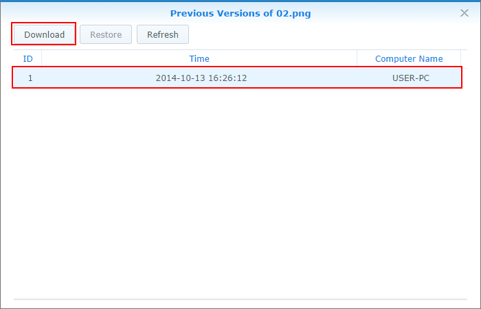
4. Notas importantes
- Mantenha sempre o histórico das versões, para a eventualidade de um ficheiro ser removido ou sobreposto por acidente.
- Em Definições globais, pode configurar se um ficheiro será recolhido do seu NAS ou eliminado no seu NAS quando elimina um ficheiro no seu PC.
5.Proteção adicional dos seus dados
Para consultar mais formas para proteger e efetuar cópia de segurança dos seus dados, clique aqui para aceder aos tutoriais que detalham outros serviços de cópia de segurança disponibilizados no DSM.